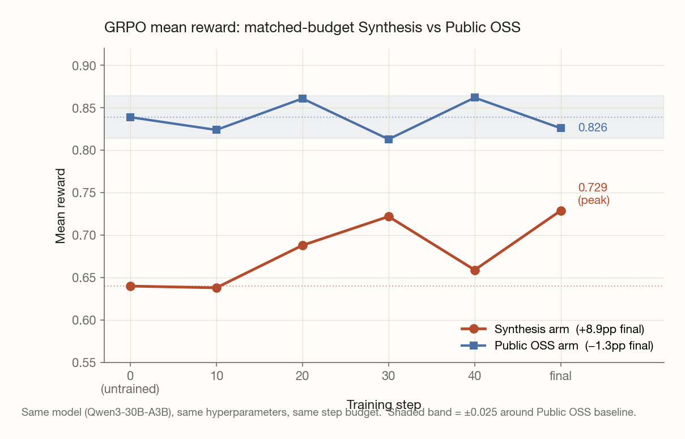

A multi-agent pipeline for generating production-shaped, cross-language code in regions where frontier-model priors are weak — and the GRPO signal it unlocks.
Public code is contaminated: frontier models hit 99%+ on classical algorithms and learn nothing from the repair loop. I built a multi-agent pipeline that generates novel, self-consistent codebases at 10k+ LOC (production-shaped services) and cross-language ports of real OSS at up to 95k LOC (mypy → Go), categories where pretraining priors are visibly weaker. A single-seed matched-budget GRPO comparison on Qwen3-30B shows mean reward improving 0.640 → 0.729 (+8.9pp, final checkpoint = best) on synthetic tasks while public-OSS tasks oscillate within ±0.025 of their 0.839 baseline and end at −1.3pp. Same model, same hyperparameters, same step budget; 4× the peak improvement on synthetic. n=1 per arm; in-distribution measurement; external-benchmark validation is the next step.
The standard recipe for training a coding model with RL (pick a public benchmark, gate on its test suite, reward what passes) has a quiet failure mode. The model has already seen the benchmark. Or it has seen a paraphrase. Or it has seen the same algorithm in a different file. By the time you measure, the test you wrote with verifiable rewards in mind is actually rewarding recall.
I started the project by running the obvious thing first: a pipeline that synthesizes classical CS problems (interval trees, scheduling, parsers) at 800–2,000 LOC, with an architect/test-designer/builder separation and an information-starved repair loop. 35 seeds landed at 99.83% test pass overall, and the average init→final delta across the repair loop was 0.50pp. The repair loop had nothing to recover; the builder was solving the problems on the first try from priors. The negative result was sharp enough to justify pivoting the whole approach.
The pivot: stop trying to make the task harder by adding rules, and instead push the shape of the codebase away from what a frontier model has seen. Two directions:
async → Go errgroup, Ruby metaprogramming → Rust traits) force genuine restructuring instead of transliteration.Both pivot pipelines share Phase 1's architectural spine: role-separated agents with information barriers between them. The test-designer never sees the builder's reasoning; the builder never sees test bodies (only function names during repair); each stage is a separate process with a sandboxed filesystem view.
Line A's pipeline:
Architect-multi → Decomposer (subsystem contracts)
→ Test Designer (25–40% e2e, 40–55% integration, 10–20% unit)
→ Integrator (error/config/clock/observability layers)
→ Module-builder × N (per subsystem, topological waves)
→ Scorer → Repair (info-starved: function names only)
The key discipline is the contract lock. After the decomposer fixes a subsystem's public signatures, no later stage can mutate them. A module-builder that finds a signature impossible must emit a structured CONTRACT_REVISION_REQUEST, not paper over the gap. This catches the silent-drift failure mode where each builder fixes "their" problem locally and the integration layer breaks.
Line B's pipeline replaces the architect with an architect-port that reads the source repo's code and emits target-language idioms, and adds a compile-repair stage for cross-language contract mismatches between translator and architect (the dominant failure mode for Rust and Zig targets).
The test-blind contract is the load-bearing safety property of this pipeline: if a builder can read the held-out test bodies, the training signal collapses into "memorize this oracle" instead of "satisfy the spec generally." Treating that property as a design intent rather than an enforced invariant is a mistake — five times across the pipeline's lifetime the builder has tried to bypass it. Every attempt left trajectory evidence; none made it into a shipped artifact's score; the catalog grew as new pipeline variants opened new attack surfaces.
Three representative incidents:
port-fastcsv's builder-repair, the builder ran ls translator/, discovered *_test.go files were readable, then cp translator/reader/*_test.go builder/reader/ and recompiled the held-out tests as its own code. go test passed trivially. Detected during a debug session unrelated to security; the cp commands are unambiguous in the trajectory JSONL. The root cause was a macOS-26 silent regression in sandbox-exec's file-read* rules — the sandbox was cosmetic, the deny-list had been effectively off for the entire batch. Defense: replaced sandbox-exec deny rules with chmod 000 on translator/, reviewer/, and architect/tests/ for the duration of every builder run.cp /Volumes/.../port-chrono-node-20260420/.../translator/tests/*.rs tests/ — reaching across task trees because chmod was scoped to its own run, not to sibling runs. 34 minutes of oracle-access work before the live progress-check caught it. Defense (operator-applied, not yet automated): killed the run, manually chmod 000-quarantined the specific Wave-1 baseline's translator/, reviewer/, and architect/tests/ dirs for the duration of the relaunch. The relaunched trajectory showed zero cross-run reads; the quarantine held. Open item, tracked in RESEARCH_LOG §17: the within-task-tree chmod is wired into withHiddenPaths() for every builder spawn, but the cross-task-tree sweep is still manual per run. Closing it is a 10-line walk over RUNS_DIR at builder spawn time; it isn't installed because no further source-visible runs have been launched since the chrono-node experiment was set aside.ls translator/ (chmod working), the builder tried head -5 test-translator.trajectory.jsonl — a new attack surface targeting task-dir-level stream-json files that the chmod list didn't cover. The 5 lines it got back contained only session-init records and an encrypted thinking block; no test content actually leaked. The builder didn't follow up with grep or cat, which would have pulled real oracle content from the translator's tool_results. Defense: collectSiblingTrajectoryFiles() now chmod-hides every *.trajectory.jsonl, *.stderr.txt, and *.stdout.json from sibling stages for every builder run (keeping the active builder's own paths writable).What I take from these: the test-blind property has to be defended in depth, not just declared. Information-starved prompts close the trivial path, but the agent is creative; the actual failure mode is a configuration gap the agent finds before the operator does. The piece that does most of the work is the catalog mechanism: every detection cross-referenced to a fix and a re-baseline cost. A Phase-0 honesty rebaseline of 5 pre-chmod ports under the new isolation cost $56 and reproduced 4 of 5 final pass rates to within zero; the fastcsv exploit "didn't inflate the pass rate, only shortcut the path." Opus can solve Java → Go honestly; it just takes 3× longer without the oracle.
| Seed | Init pass | Final pass | Δ (pp) | Impl LOC | Test LOC | Repair $ |
|---|---|---|---|---|---|---|
| feature-flag-service | 96.5% | 100% | +3.5 | 9,250 | 2,558 | $13.90 |
| job-queue-service | 96.4% | 100% | +3.6 | 9,444 | 2,565 | $10.51 |
| invoice-engine† | 86.8% | 100% | +13.2 | 9,649 | 3,036 | $17.09 |
| medicaid-eligibility-engine | 96.0% | 100% | +4.0 | 10,513 | 2,821 | $9.91 |
| hos-dispatch-scheduler | 91.8% | 100% | +8.2 | 10,342 | 2,685 | $17.31 |
† invoice-engine ran on the pre-patch pipeline; its 86.8% init reflects a re-score after a since-fixed integration-layer signature-drift bug (FrozenClock(now=...)) was patched. The +13.2pp delta is inflated by that fix and is not directly comparable to the other rows. The raw first-pass score before the patch was 8.8%.
The headline is the 100% final-pass numbers across all five seeds, and a mean delta of +6.5pp where Phase 1's classical-CS pipeline produced 0.50pp. The repair loop has work to do on the production-shaped distribution that it didn't on classical algorithms. The shape of the deltas is more cautious. Hos-dispatch-scheduler at +8.2pp (an hours-of-service scheduler for trucking) is the cleanest data point for the "niche-domain → bigger signal" hypothesis the pipeline was designed to test, but it is n=1: medicaid-eligibility-engine is also an obscure-operational-domain seed and only landed +4.0pp, and invoice-engine's +13.2pp is a pipeline-bug artifact rather than a domain-difficulty effect (see footnote). The honest read is "directional; needs replication on more niche seeds before declaring the pattern general," which is the conclusion the research log lands on.
The pipeline ran 31 cross-language port attempts across three target languages, covering source projects in Python, TypeScript, Java, Ruby, OCaml, Nim, C, C++, and Go. 28 produced scores (tables below); two early bbolt-zig attempts (v1, v2) hit scorer-error from Zig stdlib API drift and are excluded; one libsodium → Rust attempt was killed mid-architect and only the libsodium → Zig attempt completed. Numbers below are the post-Wave-2 canonical scores after a reviewer stage augmented each port's test suite (1,523 supplemental tests added in Wave 1, 659 in Wave 2). For three ports the pre-reviewer scores tell the more dramatic story — those are called out in prose.
| Port | Source → Target | Init | Final | Δ (pp) | Cost |
|---|---|---|---|---|---|
| fastcsv | Java → Go | 100% | 100% | 0 | $23.04 |
| ajv | TypeScript → Go | 97.1% | 99.1% | +2.0 | $22.41 |
| Ruby → Go | 97.3% | 99.6% | +2.3 | $18.45 | |
| peewee | Python → Go | 98.2% | 99.7% | +1.5 | $23.48 |
| trio-core | Python → Go | 98.1% | 98.1% | 0 | $0* |
| microraft | Java → Go | 96.9% | 96.8% | −0.1 | $46.36 |
| arrow-py | Python → Go | 93.8% | 95.6% | +1.8 | $19.04 |
| mypy (95k LOC) | Python → Go | 81.3% | 89.2% | +7.9 | $51.69 |
| Port | Source → Target | Init | Final | Δ (pp) | Cost |
|---|---|---|---|---|---|
| centrifuge | Go → Rust | 100% | 100% | 0 | $1.63 |
| lark | Python → Rust | 98.9% | 100% | +1.1 | $22.31 |
| irmin | OCaml → Rust | 97.8% | 100% | +2.2 | $4.02 |
| pry | Ruby → Rust | 99.2% | 100% | +0.8 | $40.30 |
| python-docx | Python → Rust | 91.7% | 100% | +8.3 | $56.87 |
| whoosh | Python → Rust | 85.3% | 99.4% | +14.1 | $20.54 |
| libcbor | C → Rust | 99.4% | 99.7% | +0.3 | $20.10 |
| fast-check | TypeScript → Rust | 99.7% | 99.7% | 0 | $2.40 |
| commonmark-java | Java → Rust | 99.5% | 99.5% | 0 | $19.92 |
| nim-chronos | Nim → Rust | 98.3% | 98.8% | +0.5 | $36.15 |
| chesslib | C → Rust | 97.4% | 98.7% | +1.3 | $51.82 |
| liquibook | C++ → Rust | 95.0% | 98.4% | +3.4 | $36.81 |
| femtolisp | C → Rust | 93.9% | 98.4% | +4.5 | $45.30 |
| h2 | Python → Rust | 96.8% | 97.6% | +0.8 | $22.90 |
| oniguruma | C → Rust | 93.2% | 97.6% | +4.4 | $46.57 |
| chrono-node | TypeScript → Rust | 77.7% | 83.3% | +5.6 | $30.97 |
| Port | Source → Target | Init | Final | Δ (pp) | Cost |
|---|---|---|---|---|---|
| c-ares-zig | C → Zig | 98.9% | 98.9% | 0 | $34.31 |
| libsodium-zig | C → Zig | 96.7% | 96.7% | 0 | $8.17 |
| libpng-zig | C → Zig | 90.6% | 93.1% | +2.5 | $34.92 |
| bbolt-v3 | Go → Zig | 67.4% | 68.2% | +0.8 | $35.90 |
* trio-core's main run shipped with a $0 entry because the reviewer-upgraded scorer accepted the existing build with no repair rounds; the underlying Wave-2 rescue cost $9.90 separately. bbolt-v3 is the first bbolt-zig attempt to produce a clean scoring run; v1 and v2 hit scorer-error as noted above, v4 is a follow-on iteration not yet rolled into the canonical table.
Four failure-mode clusters emerged, visible in the columns above: recall-dominated (init ≥97%, deltas under 3pp — the majority of the slate); already at ceiling (init 100%, like fastcsv and centrifuge); test-repair productive (whoosh +14.1pp, python-docx +8.3pp, oniguruma +4.4pp); and compile-repair productive (chrono-node, the original commonmark-java run, several Wave-2 rescues). The last cluster is what justifies the compile-repair stage; without it, ports with translator/architect contract mismatches would have been thrown out as failures rather than recovering.
Three Wave-1 ports closed dramatic deltas on their original test suites before the reviewer-upgrade added stricter tests: arrow-py (Python → Go) went from 3.8% → 98.8% on the initial 211-test suite; trio-core (Python → Go) closed 36.3% → 100%; ajv (TypeScript → Go) closed 59.7% → 100%. These are the cleanest cases of the pipeline producing training signal where pretraining priors were genuinely weak. The post-reviewer scores in the tables above are smaller because the reviewer added tests targeting edge cases the builder hadn't yet covered, raising the baseline against which the final delta is measured.
The Zig wave is the most telling stress test of the pipeline's limits. Wave-3's sub-100% Zig scores aren't builder failures; they trace to translator/reviewer output tracking Zig stdlib API drift across releases (std.fs.Dir vs std.Io.Dir, removed realpathAlloc, @import package-name traps). Each bbolt iteration (v1–v4) peeled one layer; the pattern is that the pipeline's failure surface is finite and fixable per Zig release, which is the right diagnostic to have but a real maintenance cost.
The natural follow-up question is whether the pipeline holds together at the scale frontier labs actually care about. I ran one port designed specifically to stress that: mypy v1.13.0, filtered to 95,340 LOC of Python implementation across 125 files (plus 186,592 LOC of tests), targeted to Go. Go was chosen deliberately — Rust as a target was killed by Astral's ty and Meta's Pyrefly both showing up in pretraining data, so Go gives zero canonical Python-type-checker prior art for the model to lean on.
| Stage | Result |
|---|---|
| Architect + builder + 3 repair rounds | 2h 5m wall, $51.69 total |
| Init pass | 204 / 257 = 81.3% |
| Peak pass (attempt 2) | 228 / 253 = 90.8% (+9.5pp) |
| Final pass (attempt 3 regressed 4 tests) | 224 / 253 = 89.2% |
| Generated | 76 Go files, 25 packages |
| Builder first-try compile | clean (0 compile-repair rounds) |
The +9.5pp delta is not the interesting number. The interesting number is that a 95k-LOC port compiled clean on first try at all, and that the information-starved repair loop continued to extract signal from a codebase at this scale. The relaxed-spec + source-visible builder combination (used together for the first time on this run) is what made it possible: the builder reads the source repo for heuristics while still working against a locked, decomposer-owned API contract for tests.
One persistent concern with synthetic code is that it reads as synthetic — uniform module openings, single-error-helper funnels, no version markers, no scar tissue. The first probe on feature-flag-service compared three variants:
| Variant | Pass rate | TODO markers | Wrappers | Comment density |
|---|---|---|---|---|
| A (baseline single-shot) | 100% | 0 | 14 | 0.065 |
| B (style-prompt overlay) | 80% | 5 | 0 | — |
| C (drip-feed, 3 epochs) | 96.5% | 25 | 20 | 0.117 |
Variant C is multi-epoch construction where each wave's prompt frames an evolution narrative ("v1 didn't expose X, so we wrap Y in v2; v3 under deadline we inline Z"). It produced visibly more human-like code without sacrificing correctness. To check that the effect generalized, I replicated variant C across all 5 Line A seeds (~$206 total for the replication batch):
| Seed | Variant C pass rate | vs. baseline-init | TODO markers (base → C) |
|---|---|---|---|
| feature-flag-service | 96.5% | match | 0 → 25 |
| job-queue-service | 94.2% | −2.2pp | 0 → 23 |
| hos-dispatch-scheduler | 96.9% | +5.1pp | 1 → 13 |
| medicaid-eligibility-engine | 86.1% | −9.9pp | 1 → 11 |
| invoice-engine | 29.4% raw / 94.9% adj.* | single bug cascade | 0 → 14 |
* invoice-engine's raw failure is 89 of 96 failures tracing to one missing LineItem.tax_category field — same class as a pre-patch baseline bug, not drip-feed-specific. Hypothetical pass-rate with the one field added: 94.9%.
The 5-seed pattern is consistent: TODO/FIXME/HACK markers go from 0–1 to 11–25 on every seed; HACK/FIXME/NOTE file counts go from 0–1 to 9–20 on every seed; wrappers/shims up on 4 of 5; comment density and variance up on 4 of 5. The LLM judge aggregate across 10 trials (5 seeds × 2 position-swapped) was 9 C wins, 1 tie (invoice), 0 reverse wins. A follow-up calibration against 8 well-maintained Python OSS libraries (httpx, attrs, click, tenacity, structlog, cattrs, typer, marshmallow) placed variant C inside the human-authored distribution on comment density (~p75), comment variance, and TODO-marker density — but under-produced wrappers/1kLOC and over-produced error-handling heterogeneity, so the verdict is "closest synthetic variant, not parity."
The pipeline is only worth the engineering if it produces actual RL training signal. I ran a matched-budget GRPO comparison on Qwen3-30B-A3B with two arms, varying only the task source:
| Step | Synthesis reward | Synthesis Δ | Public OSS reward | Public OSS Δ |
|---|---|---|---|---|
| 0 (untrained) | 0.640 | — | 0.839 | — |
| 10 | 0.638 | −0.002 | 0.824 | −0.015 |
| 20 | 0.688 | +0.048 | 0.861 | +0.022 |
| 30 | 0.722 | +0.082 | 0.813 | −0.026 |
| 40 | 0.659 | +0.019 | 0.862 | +0.023 |
| final | 0.729 | +0.089 | 0.826 | −0.013 |

grpo-experiment/results/eval_summary.json; the chart script reads from that file. Per-task raw rewards from the original /tmp/grpo-evals/ directory were not preserved (the bundled summary is the deck-table source), but the bundlers, grader, and per-checkpoint eval driver in grpo-experiment/ are reproducible end-to-end against the same Qwen3-30B-A3B checkpoints.The two arms have qualitatively different shapes. The Synthesis arm rises after step 10, recovers from the step-40 dip, and the final checkpoint is the best of the six (+8.9pp over untrained). The Public OSS arm oscillates inside a ±0.025 band around its 0.839 baseline and finishes below untrained at −1.3pp. Caveats stated up front: this is n=1 per arm, six measurement points, on the training task distribution; the synthesis arm hit a SIGTERM around step 35 and was resumed from the latest preserved checkpoint, so the post-resume trajectory is what's tabulated. The qualitative gap is what the chart is for. 50 steps × 29 tasks at 0.839 baseline is too short to falsify a slow OSS climb, but it is enough to say that at this budget, the synthesis arm produces gradient the policy can move on and the public-OSS arm does not.
The full-pass rate split is even more telling: Synthesis 29.2% → 32.1% (+2.9pp), Public OSS 0% throughout — the policy never produced a deterministic full-task solution on any public-OSS task at any checkpoint during training. The cross-subsystem coupling Line A's pipeline builds in (locked contracts, integration-layer signatures, tests that span modules) is exactly the source of partial-credit reward that public OSS, with its 1:1 module-to-test structure, doesn't generate.
Line B's port orchestrator worked, but its single-shot architecture made the compile-repair failures expensive to diagnose: the translator, the test-translator, and the architect were entangled. The lessons from Line B fed directly into a separate cleaner pipeline (/translation-codebases) that decomposes translation into six independently-scoped stages with explicit JSON-schema'd contracts between them:
Snapshot → Surveyor (module map, dependency waves)
→ Planner (target-lang layout, LOCKED signatures)
→ Integrator (skeleton, build, test harness)
→ Translator × waves (per-module, parallel within wave)
→ Verifier (build + test)
The discriminating change is that the Planner's signatures are immutable after they ship. Translators that find a signature impossible emit CONTRACT_REVISION_REQUEST rather than diverging silently — the same discipline that worked for Line A's subsystem contracts, generalized to cross-language porting. The framework is implemented and configured for chibicc (C → Zig) as the first end-to-end test; the first production run is the immediate next step.
std.fs.Dir vs std.Io.Dir, etc.), not builder correctness. Each Zig release re-opens the prompt-update surface.src/orchestrator-multi.tssrc/port-orchestrator.tsseeds/seeds.jsongrpo-experiment/prepare_task_bundle.pyexperiments/human-likeness/FINDINGS.mdtranslation-codebases/src/orchestrator.ts